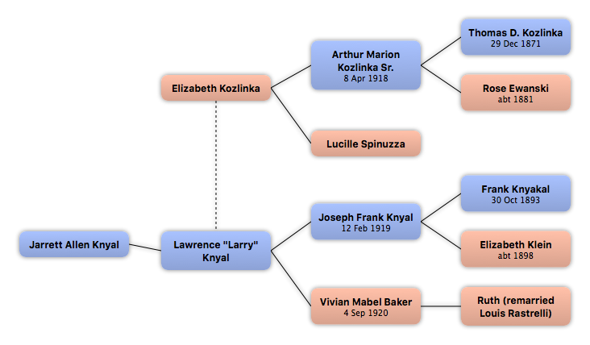

Home
Home
 Persons
Persons
 Families
Families
 Sources
Sources
 Statistics
Statistics
Elizabeth Kozlinka

Context

Parents
| Father | Date of Birth | Mother | Date of Birth |
|---|---|---|---|
 Arthur Marion Kozlinka Sr. Arthur Marion Kozlinka Sr.
|
8 Apr 1918 |
Lucille Spinuzza
|
Partners & Children
| Partners | Date of Birth | Children |
|---|---|---|
|
Lawrence "Larry" Knyal
|
Jarrett Allen Knyal
|
Events
Facts
Media
Note
Sources
Kinships
| Name | Degree of Kinship | Date of Birth | Place of Birth | Date of Death | Place of Death |
|---|---|---|---|---|---|
| Partners | |||||
| Partner or Husband | |||||
| Children | |||||
| Son | |||||
| Parents | |||||
| Mother | |||||
| Father | 8 Apr 1918 | Chicago, Cook, Illinois | 31 May 1993 | Elk Grove Village, Cook, Illinois | |
| Grandparents | |||||
| Grandfather | 29 Dec 1871 | Poland | 20 Apr 1950 | Chicago, Cook, Illinois | |
| Grandmother | abt 1881 | Poland | |||
| Great grandparents | |||||
| Great grandfather | |||||
| Great grandmother | abt 1864 | Poland | |||